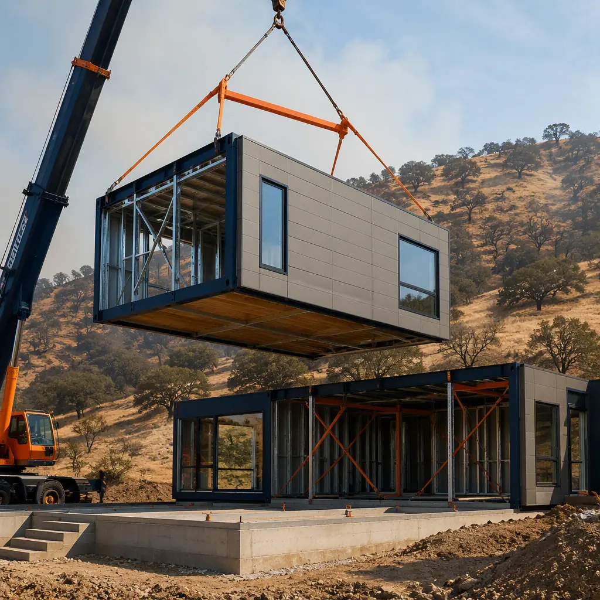
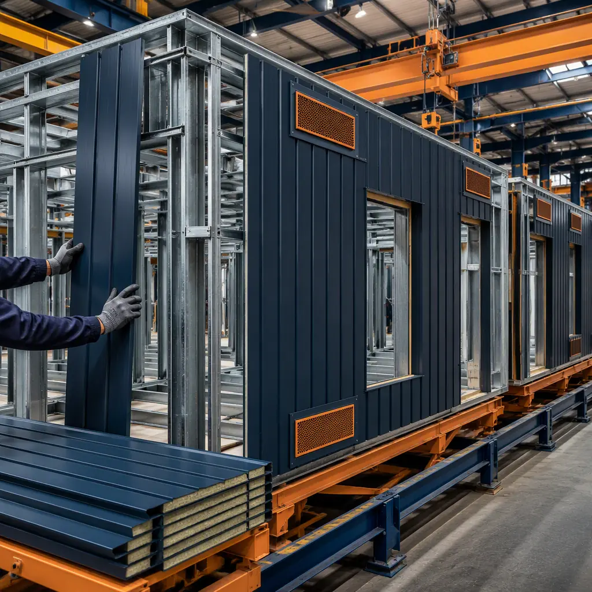
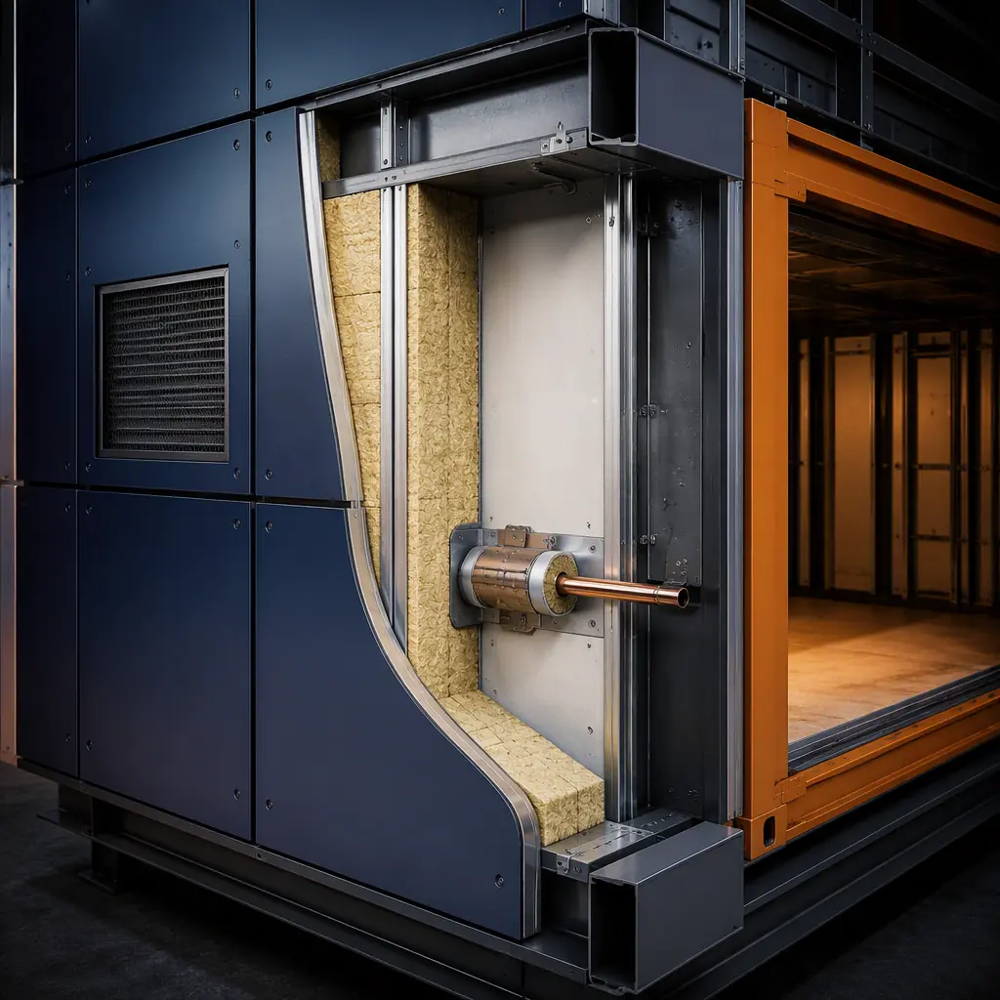
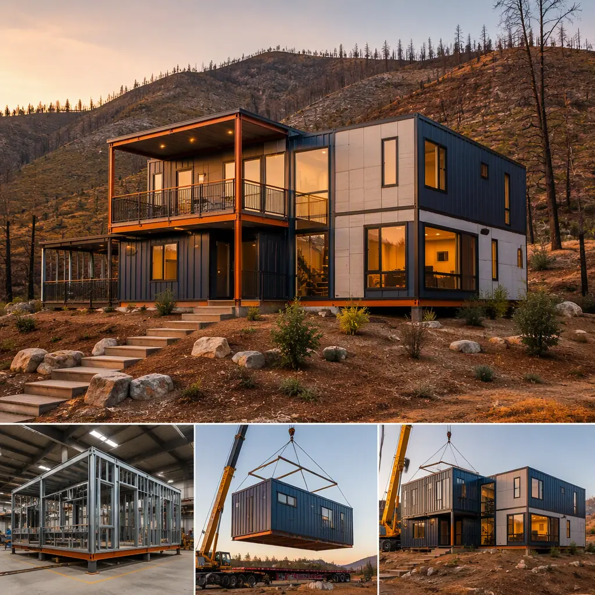

Wildfire is now a structural engineering problem, not just a news cycle. The 2025 Los Angeles County fires destroyed more than 16,000 structures and caused estimated economic losses above $250 billion, and roughly one in three American homes — about 44 million residences — sits in or near the wildland-urban interface (WUI), the zone where development meets combustible vegetation. Insurers have responded by pulling coverage or raising premiums in fire-prone ZIP codes, which means a building's wildfire performance now drives both its insurability and its resale value. Modular construction is uniquely positioned in this market because the two things WUI codes demand — a non-combustible structure and a tightly sealed, ember-resistant envelope — are exactly what factory-built steel-frame modules deliver as standard. A steel-frame modular building with non-combustible cladding, ember-resistant vents, and factory-sealed penetrations meets CAL FIRE Chapter 7A and NFPA 1144 requirements with an inspection record for every assembly, typically at a 3–10% cost premium over standard construction — and in many cases, at a lower total cost than a wood-frame site build once insurance is priced in. This guide explains the wildfire threat model, the code framework, and how modular delivery satisfies it.

Why Wildfire Risk Is Reshaping Construction Standards
The WUI is the fastest-growing land-use category in the United States — roughly 44 million homes and 120 million people now live in it, and the footprint expands by about 2 million acres per decade as development pushes into vegetated terrain. Fire behavior there is fundamentally different from a forest fire: ember showers travel miles ahead of the flame front, and post-fire analyses consistently show that most homes ignite from embers landing on or entering the building, not from direct flame contact. That single fact reframes construction strategy — the objective is not to survive standing in the fire, but to deny embers every point of entry.
- Code response. California adopted Chapter 7A of the California Building Code for new buildings in fire-severity zones; NFPA 1144 (Standard for Reducing Structure Ignition Hazards) and NFPA 1141 provide the national framework for WUI development.
- Insurance response. California's FAIR Plan, the insurer of last resort, grew to more than 450,000 policies as carriers non-renewed fire-zone coverage; insurers now underwrite to the building's ignition-resistant features, not just its distance from vegetation.
- Market response. Municipalities from Colorado to Oregon are adopting WUI codes faster than builders can retrain crews — the same adoption curve our fire safety construction guide documents for commercial fire-rated assemblies.
For developers, the practical consequence is that the wildfire-resistance of the structure is now a line-item underwriting factor — and a building system that can prove its assemblies in a factory file folder is dramatically easier to insure than one whose fire-resistance depends on field workmanship.
What Makes a Building Ignition-Resistant
Ignition-resistant construction is a system of five exposure paths, each with defined requirements. Embers attack a building through its roof, its vents, its windows, its eaves and soffits, and its decks and fences — and the building is only as strong as its weakest path:
| Exposure Path | Ignition-Resistant Requirement | Why Modular Delivers It |
|---|---|---|
| Roof assembly | Class A fire-rated roof covering | Factory-installed roof membrane on steel deck, rated and documented |
| Vents (attic, eave, foundation) | Ember-resistant vents with ⅛-in (3 mm) mesh, tested to ASTM E2886 | Vents specified and installed at factory stations, not retrofitted |
| Windows and glazing | Dual-pane tempered glass, non-combustible frames | Glazing installed and sealed indoors to ±2 mm module tolerance |
| Eaves and soffits | Enclosed soffits, non-combustible or protected undersides | Soffit enclosure completed in factory, no field carpentry gaps |
| Walls and structure | Non-combustible or ignition-resistant exterior walls | Steel frame and non-combustible cladding as standard construction |
Notice that every requirement is a controlled assembly — precisely the kind of work that benefits from being done on a factory line rather than on a roof in weather. The structural advantage is detailed in our steel construction guide, and the quality-control evidence is in our quality comparison analysis.
How Factory-Built Steel Modules Address WUI Requirements
Modular buildings are not just wildfire-compatible; the delivery method and the threat model align almost point for point. The structure itself is the first difference: a steel frame is non-combustible by nature, eliminating the single largest ignition source in conventional wood-frame construction — the structural skeleton that keeps burning after the fire passes. Beyond the frame, the factory environment removes the field-workmanship variables that WUI inspectors spend most of their time chasing:
- Sealed module envelope. Modules are fabricated with continuous air and ember barriers, and the joints between modules are closed with gasketed, fire-rated connections — a controlled process rather than a caulk-gun exercise in the field.
- Penetration control. Every penetration through the envelope — plumbing, electrical, HVAC — is fire-stopped and sealed at the factory with UL-listed assemblies, documented by photo and inspection sign-off.
- Verifiable vent installation. Ember-resistant vents are installed at a dedicated factory station, not added as an afterthought; the mesh and damper assemblies arrive with the module.
- Complete documentation. The factory QA file becomes the WUI compliance package — the same discipline our factory QC systems guide shows reducing defects by 50–80% versus field construction.
This is the same logic that makes modular the default delivery method for the most demanding building programs — hospitals, clean rooms, and laboratories — applied to the fire-severity zone. The assemblies are built indoors, inspected at the point of work, and shipped with their evidence.

WUI Code Compliance: Chapter 7A and NFPA 1144
Two code frameworks govern wildfire-resistant construction, and a compliant project often satisfies both. California's Chapter 7A applies to new buildings in Fire Hazard Severity Zones and is the most prescriptive standard in the country; NFPA 1144 provides a nationally adopted risk-reduction standard with a scoring-based approach to structure ignition hazard. The table below summarizes how the requirements map:
| Requirement | CAL FIRE Chapter 7A | NFPA 1144 |
|---|---|---|
| Roof covering | Class A required | Class A recommended; scored |
| Exterior walls | Non-combustible or tested assemblies | Ignition-resistant materials; scored |
| Vents | Ember-resistant, ⅛-in mesh or tested design | Ember-resistant where required by hazard score |
| Windows and doors | Dual-pane tempered or tested glazing | Glazing protection scored by exposure |
| Eaves and soffits | Enclosed or protected | Enclosed where required |
| Decks and fences | Ignition-resistant materials within 5 ft | Ignition-resistant within hazard zones |
Because the code requirements are assembly-level, the WUI inspection looks for the same evidence the factory already produces: material test certificates, assembly photos, and sealant and fastener specifications. Our permitting and zoning guide explains how factory inspection records integrate with local approval in fire-severity jurisdictions, and our blast-resistant construction guide shows the same documentation discipline applied to another extreme-loading scenario.
Ember-Resistant Details Built in the Factory
The difference between a wildfire-resistant building and a conventional one is almost entirely in details that are invisible in the finished structure — and that is precisely where factory construction has the largest advantage. Consider the attic vent: on a site-built home, an ember-resistant vent is one of dozens of items a framing crew installs between other trades; in a modular plant, it is a line item on a controlled work order, installed with the correct mesh and damper orientation at a dedicated station, photographed, and signed off. The same applies to the roof-to-wall flashing, the soffit enclosure, the window perimeter seal, and the module-to-module joint — each is a controlled operation with a spec sheet and an inspection record.
Fire-resistance testing is also easier to prove from a factory. Tested assemblies — the wall, roof, and floor systems used in the modules — are reproduced identically in every unit, so the ASTM E119 fire test or ASTM E2886 ember test certificate applies to the entire production run, not to a single field-built wall. For insurance underwriters and code officials, a production-run test certificate is a stronger document than a field inspection sign-off, which is one reason modular projects in WUI zones consistently clear the financing and insurance hurdles faster — the risk is documented, not asserted. Our insurance and risk management guide covers how factory documentation translates into premiums.

Cost, Insurance, and Market Implications
Wildfire-resistant construction is not a luxury upgrade; it is increasingly the baseline for insurable, financeable buildings in WUI zones. The cost premium for ignition-resistant assemblies over standard construction is typically 3–10% — and for steel-frame modular, much of that premium is already absorbed by the base system, since the structure is non-combustible and the envelope is factory-sealed as standard practice. The savings side is larger than the premium: property owners in fire-prone areas report premium reductions of 15–30% for documented ignition-resistant construction, and buildings with defensible space and rated assemblies remain insurable when neighboring properties cannot get quotes at any price.
Wildfire resistance is the rare building upgrade that pays for itself twice — once in construction cost, where factory-built assemblies eliminate the field premium for rated details, and again in the insurance market, where documented ignition-resistant construction is the difference between a policy and a non-renewal. In fire-severity zones, the building envelope is becoming an underwriting asset, and the factory file folder is the evidence that underwriters want.
Quantify it against a real scenario: a 4,000 sq ft commercial building in a high fire-hazard zone at $320 per sq ft site-built versus $300 per sq ft modular including the ignition-resistant package. The modular premium for wildfire resistance is roughly 3–5% over the base steel-frame system, while converting a wood-frame site build to Chapter 7A compliance typically adds 8–15% — the difference is that the non-combustible structure and sealed envelope are the modular baseline, not an add-on. When annual premiums run 0.4–1.2% of insured value in fire-prone areas, a documented ignition-resistant building can save $8,000–30,000 per year on a $2.5 million asset — enough to offset the entire construction delta within two years.
For communities and developers, the same logic applies at portfolio scale: wildfire-resistant modular projects in WUI markets hold value, clear insurance, and lease faster than wood-frame alternatives. The resilience framing is consistent with the analysis in our extreme climate construction guide, our tornado and hurricane-resistant buildings guide, and our coastal and flood-resistant construction guide — a family of hazard-specific guides for the same factory-built system.
Planning a Wildfire-Resistant Modular Project
- Confirm the hazard zone and code trigger. Determine your Fire Hazard Severity Zone or NFPA 1144 hazard score first — it sets the exact assemblies required and the documentation the inspector will demand.
- Specify ignition-resistant details in the module contract. Ember-resistant vents, Class A roof, dual-pane tempered glazing, and sealed penetrations must be line items in the factory spec, not options.
- Require the test certificates. Ask for ASTM E119 and ASTM E2886 test documentation for the exact assemblies being produced — production-run certificates are the strongest compliance evidence you can hold.
- Plan defensible space around the module footprint. Vegetation management and separation distances are site work, not factory work — budget for them and confirm the local defensible-space ordinance.
- Engage the insurer during design. Underwriters will price the documented assemblies; submit the factory spec and test certificates during design to lock premium assumptions.
- Verify module delivery access. WUI sites are often on narrow, sloping roads — assess crane access and module transport corridors during site selection using the process in our transportation and logistics guide.
Developers, municipalities, and property owners building in fire-prone regions should also review our fire safety guide for the interior life-safety requirements that pair with the exterior WUI envelope — the two together define the complete fire-resilience package.
